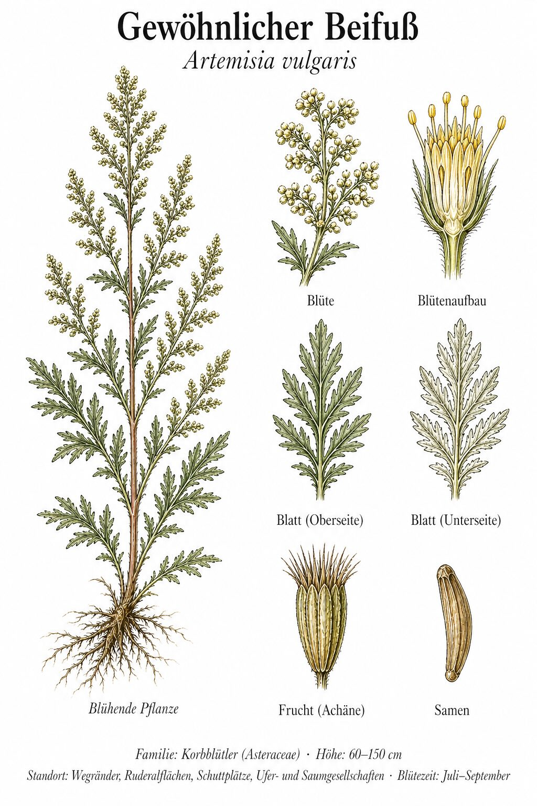
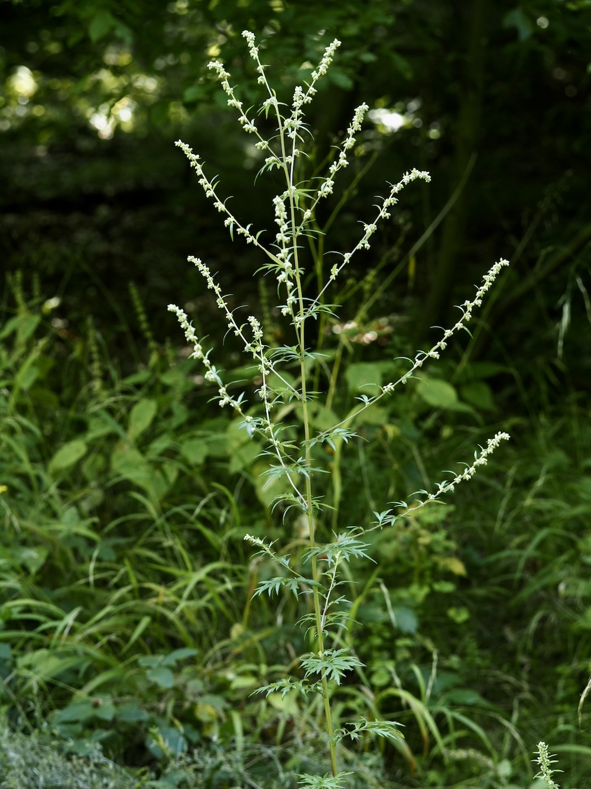

Die Pflanze, die der Gänsebraten braucht
Wer Gänsebraten oder Sauerbraten kocht, kennt Beifuß. Die getrockneten Blätter sind eines der ältesten Würzkräuter der nordeuropäischen Küche — sie helfen, fettes Fleisch besser verdaulich zu machen. Tatsächlich enthält Beifuß Bitterstoffe, die die Verdauung anregen. Frische Spitzen kannst du im Sommer pflücken und trocknen — das ist viel intensiver als Supermarktware.
Heilig-mystisch
Beifuß war wohl die wichtigste Heil- und Schutzpflanze des germanischen Mittelalters. In der Sonnwendzeit wurden Kränze geflochten und Gürtel daraus gegen Müdigkeit auf langen Wanderungen getragen — daher der Name „Bei-Fuß“ (am Fuß). Selbst Karl der Große empfahl Beifuß-Anbau in jedem Klostergarten. Heute zwischen Asphalt und Bahndamm — eine Pflanze mit Wurzeln in tausend Jahren Geschichte.